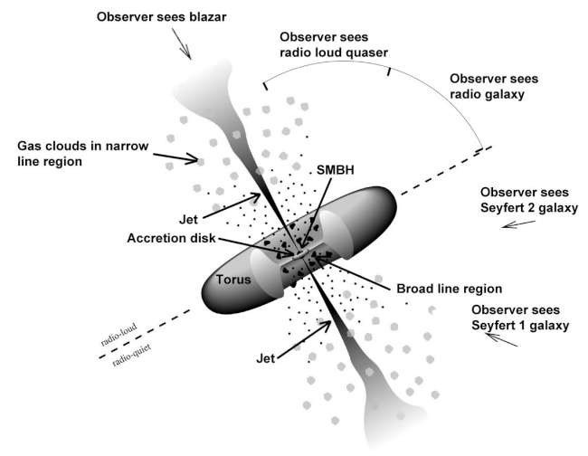
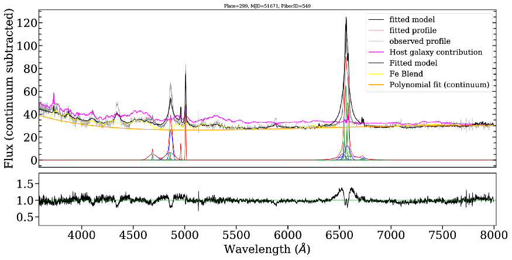
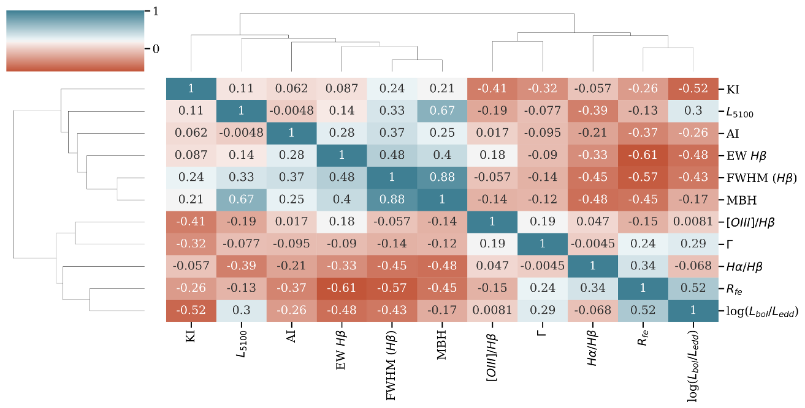
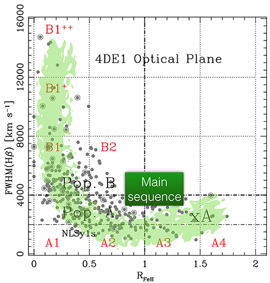

A comparison of the properties of Narrow Line and the Broad Line Seyfert galaxies
AGNs are very luminous objects at the centre of active galaxies. The inner regions of these galaxies can not be resolved directly, yet the understanding of these regions can be achieved by employing indirect methods. In this study, we employed a statistical approach to understand a very peculiar class of AGN with respect to the general AGN population- the Narrow Line Seyfert galaxies, and have found out that emission line region outflows exist in the innermost regions of these AGN which adds another peculiarity to their behaviour.
Recent discoveries have pointed out that a supermassive black hole (SMBH) exists in the centre of the galaxies, with mass ranging from a million to a billion solar masses. This central black hole accretes matter at a very high rate. In turn, an accretion disk is formed and it radiates a luminosity ranging from a billion to a trillion times the luminosity of the Sun!
This animation is an artistic impression of the inner regions of an active galaxy. The animation starts with the optical image of 3C273, a very well-known quasar, and zooms in up to the sub-parsec scale, where the clumps of gas known as the Broad Line Region (BLR) clouds exist embedded beneath a torus of dust. (Video Courtesy: ESO YouTube channel)
These kinds of galaxies are called active galaxies, or more popularly these objects are called Quasars. Quasars were discovered to be very luminous extragalactic objects only in 1963, through the work of Martin Schmidt. In research, various names: Active galactic Nuclei (AGN), Quasars, Blazar, Seyferts, etc. are known (see this for detailed information about the Quasars). Commonly, people use AGN as a generic term, while Quasar is used for AGNs having higher luminosities (> 1e44 ergs/sec). Seyferts are the AGN that are a little less luminous than Quasars. Type-1 AGN are the ones where the observer is able to view the innermost regions comprising the accretion disk and the BLR without any obscuration, while in the Type-2 AGN, the dusty torus obscures the innermost regions. Among the type 1 Seyferts, a peculiar class of galaxies known as the Narrow line Seyfert 1 galaxies is known to exist. These are young AGN, with very high accretion rates. The study of these objects provides clues to the understanding of the formation and growth of AGNs.

The Unified Model for AGN accounts for various properties observed in AGN. This simple model differentiates between the various classes based on the orientation with respect to the observer. (Image courtesy)
In this work, we have studied the properties of these NLSy1 galaxies as compared to the general type-1 AGN which we term Broad-line Seyfert galaxies (BLSy1) galaxies. We achieved this by collecting optical spectra for a sample of about 260 galaxies. We searched for the spectra in the publicly available SDSS database. SDSS provides information for hundreds and thousands of such objects on their server. We assembled a set of 144 NLSy1 and 117 BLSy1 galaxies which are in a similar luminosity and redshift range.

The multiple-component spectral decomposition was applied to fit one of the sources in this study.(Image courtesy)
After fitting the spectra by employing a multi-component spectral decomposition technique, we studied a set of 11 physical parameters to compare these two populations. It is very important to know that the exact relation of the NLSy1 galaxies with the BLSy1 galaxies remains unknown for the general AGN population.
We characterized the population of these galaxies based on the asymmetry observed in a very prominent emission line: the H-beta emission line. In our sample, we found out the NLSy1 galaxies are 3 times more likely to show emission line asymmetries as compared to the BLSy1 galaxies population. This result is very important in our understanding of the difference between these two populations. Note that the emission lines are generated in the Broad-line Region (BLR) of these AGNs, and this region cannot be resolved by any observation technique at present. Thus, we are reliant on indirect tools to infer the dynamics of matter in these regions. In this regard, emission line asymmetries encode information about the dynamics of matter at the location from where they are emitted and thus it becomes necessary to characterize. The outflows may also be due to the winds arising from the accretion disk in these AGNs, which influences our understanding and further modelling of the AGN accretion disks.

A cluster map showing the correlations between 11 parameters. (Image courtesy)
We calculated the Spearman rank correlation coefficients among the parameters. We found that the accretion rate characterized by the Eddington Ratio is anti-correlated with the FWHM of the H-beta emission line which means the AGNs which are accreting at a faster rate, will have narrower emission profiles.
Further, we ran a Principal component analysis (PCA) on the data to understand the parameters deriving the correlations and anti-correlations. Basically, PCA reduces the dimensions of the dataset in the sense that what we were able to derive based on 11 physical parameters, we could do with fewer principal components. This helps us understand the underlying correlations among the fewer parameters. Based on the results from the PCA, we find out that the Eigenvectors 1 and 2 of the PCA are a bit different for both populations. What can be the possible reason behind this?

The main sequence of quasars obtained from the recent studies. (Image courtesy)
Importantly, based on an ensemble study of around 500,000 AGN, Shen et al. 2014 reported the same Eigenvector correlation as has been observed in this study. This is significant because it points out that AGN located in different redshifts and luminosity bins show similar properties which can be arranged to form a sort of main sequence. The main sequence is a very neat way to arrange the population of stars based on the luminosities and their age. A similar main sequence for the AGN has been proposed based on this correlation. Are the Eigenvectors telling a different story? We don’t know yet. However, we can safely say that the NLSy1 galaxies form the extreme end of the AGN population with very high accretion rates and low SMBH masses. The discovery of significant emission line asymmetries in the NLSy1 galaxies means that outflowing gas is indeed present in the line emitting regions. Similar studies covering a larger population will be very helpful in our understanding of the peculiarity of these AGNs.
Original paper: A comparative study of the physical properties for a representative sample of Narrow and Broad-line Seyfert galaxies
First Author: Vivek Kumar Jha
Co-authors: Hum Chand, Vineet Ojha, Amitesh Omar, Shantanu Rastogi
First author’s Institution: Aryabhatta Research Institute of observational sciencES (ARIES), Nainital, 263002; India
Related articles
- Looking at five radio-quiet AGN through the polarization lens
- What makes radio-quiet AGN radio-quiet? A polarization perspective
- Star-forming S0 Galaxies in SDSS-MaNGA: fading spirals or rejuvenated S0s?
- Bending of Cosmic fountains, giving birth to a peculiar X-shaped galaxy
- Bar Buckling and Boxy/Peanut Bulges as the Tracer of Dark Matter Halo Shape